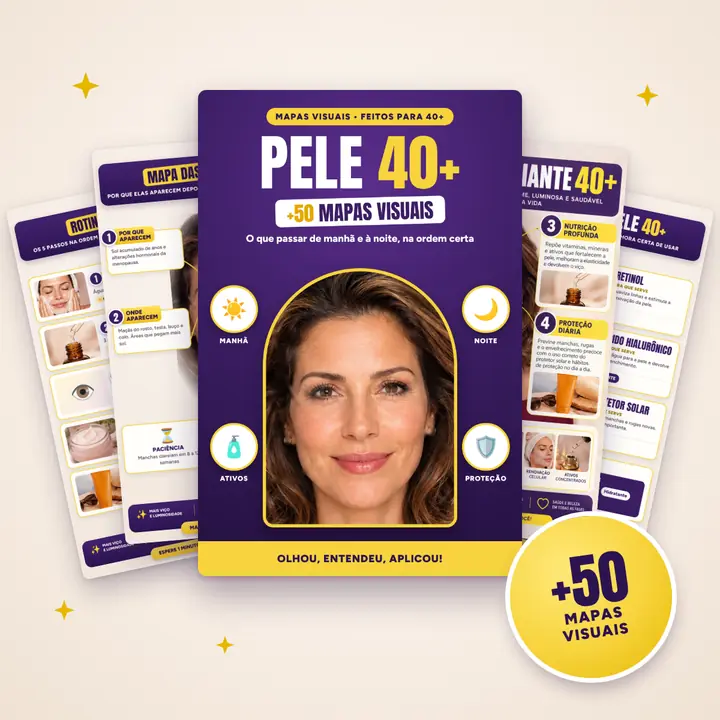
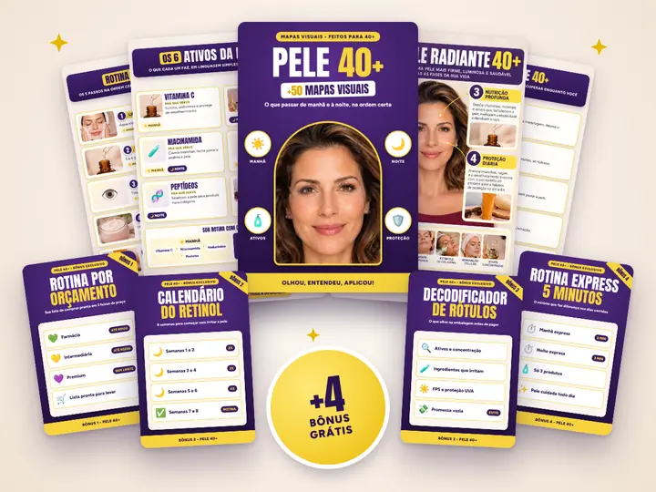

Rotina da Manhã
- Como limpar sem ressecar
- Vitamina C: quando e como usar
- Niacinamida pra manchas
- Creme da área dos olhos
- Hidratante certo pra pele 40+
- Protetor solar: a quantidade que ninguém te conta
- A ordem dos 6 passos num mapa só
E muito mais
Acesso imediato por e-mail e WhatsApp após a confirmação da compra
E muito mais
E muito mais
E muito mais
E muito mais
A sua pele mudou depois dos 40, e a rotina precisa mudar junto. Com os mapas você para de adivinhar e sabe o que usar, em que ordem e por quê. Essa condição especial termina quando o contador zerar.
Quero meus mapas agora
Colagem do kit+ 4 Bônus exclusivos
R$27 grátis
Sua lista de compras pronta em 3 faixas: farmácia, intermediária e premium.
R$27 grátis
8 semanas pra introduzir o retinol aos poucos, sem irritar. Pronto pra imprimir.
R$19 grátis
O que olhar na embalagem antes de pagar, pra nunca mais cair em promessa vazia.
R$19 grátis
A versão enxuta pros dias corridos: o mínimo que faz diferença.

Imagem do Plano Completo+4 bônusDe R$67,90 por
R$37
ou em até 12x no cartão
Economia de R$92 em bônus, grátis
Quero o plano completoR$19,90
[Depoimento real 1]
[Depoimento real 2]
[Depoimento real 3]
Se por qualquer motivo você sentir que os mapas não te ajudaram, é só pedir e devolvemos seu dinheiro. Sem prazo, sem burocracia e sem perguntas.
Não. Cada passo tem uma opção de farmácia e uma premium. Você escolhe o que cabe no seu bolso.
Sim. Os mapas começam do básico e mostram a ordem passo a passo.
Melhor ainda. Você vai descobrir se está usando na ordem e na quantidade certas, e se aquilo faz sentido pra sua pele.
Sim. Tem mapas pra identificar seu tipo de pele e ajustar a rotina.
Os mapas e o Calendário do Retinol mostram como começar aos poucos e o que fazer se a pele reagir.
Não. Os mapas te ajudam a entender e organizar sua rotina. Pra tratamentos, manchas persistentes ou alterações na pele, procure sempre um dermatologista.
Por e-mail e WhatsApp, logo após a confirmação do pagamento.
Sim. Os mapas foram feitos pra ler no celular e também podem ser impressos.
Não. O acesso é vitalício.